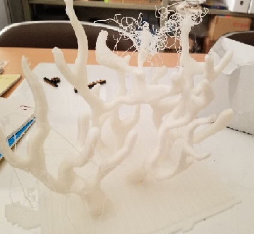

・L-DEVOという3Dプリンターを使用して造形しました。
・この3Dプリンターは大きい物を出力できます。江の島の展示にはこの3Dプリンターを使用して珊瑚を作りたいと思います。
・この試作2号は、枝分かれした上のパーツに対して根元が強度不足であったため途中で折れてしまい失敗しました。

AUTODESKが無料提供しているソフトウェアのこと。
３Dデータを組み合わせたり、データの加工を行うためのソフトウェアです。 すでに作成してある３Dデータ同士をミックスして利用する場合などにも便利に利用できるツールです。
Meshmixerダウンロードリンク